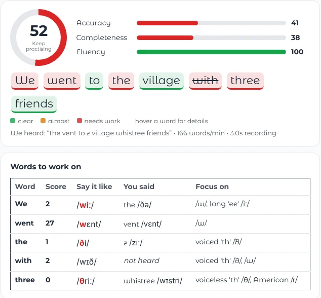

TeachMe: English Pronunciation Coach
A pronunciation coach that gives sound-by-sound feedback and lets you practise conversations with an AI partner. It runs locally on a laptop using open-source models.

AI/ML Engineer Toronto, Canada
I build useful AI and machine learning tools, especially around language and speech. Here are a few things I’ve worked on.
Selected projects
A pronunciation coach that gives sound-by-sound feedback and lets you practise conversations with an AI partner. It runs locally on a laptop using open-source models.

A text-to-video experiment that turns a short prompt into a longer video, with generated scenes and sound. It runs on a free Colab or Kaggle GPU.
A little about me
I enjoy taking ideas from experiments to tools people can use. I have a master’s degree in AI from Politecnico di Milano and work on applied machine learning in Toronto.
Experience
AlertdrivingSep 2025 — Oct 2026
Building AI for conversation intelligence and driver safety, including real-time audio and LLM services.
CubeangleSep 2024 — Sep 2025
Built credit and loan decisioning pipelines on Azure Databricks.
LUTYOMay 2023 — Jul 2025
Worked on driver-behaviour risk scoring and cloud-based machine learning systems.
Toronto Metropolitan UniversityFeb 2025 — Aug 2025
Studied sentiment and gender signals in more than 1.9 million academic reviews.
Politecnico di MilanoFeb 2024 — Feb 2025
Developed machine learning models to classify political advertisements.
Education
M.Sc. Computer Science & Engineering, AI TrackPolitecnico di Milano (Sep 2022 — Jul 2025)
Graduate Program, Machine Learning TrackUniversity of Tübingen (Oct 2023 — Feb 2024)
B.Sc. Computer Engineering, Software EngineeringBabol Noshirvani University of Tech (Sep 2017 — Aug 2021)
Say hello